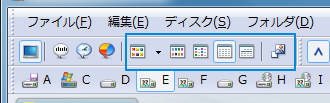

画像ファイルであればその画像イメージを縮小して表示します。
イメージ表示可能なファイル種別は、Jpg, Gif, Tif, Psd, Pcd, Png, Bmp
等の一般的に認知されているイメージフォーマットの他、
CanonRAW(Crw, Cr2), NikonRAW(Nef), MinoltaRAW(Mrw), PentaxRAW(Pef), SigmaRAW(X3f),
AdobeDigitalNegative(Dng) といったデジタルカメラ
のメーカー固有のRAWファイルもサムネイル表示が可能です。
大きいアイコンを使って横にオブジェクト情報を並べて表示します。
通常のファイルフォルダであれば、ファイル名・種別・更新日時・サイズ
が同時に表示されます。
オブジェクト名を表示します。
通常のファイルフォルダであれば、
必要に応じてファイルの日付やサイズまたは属性を追加で表示可能です。
オブジェクトについての各種詳細情報も含めて表示します。
通常のファイルフォルダであれば、ファイル名・サイズ・更新日時・種別・属性・DOS名が表示されます。
“属性” 欄に表示される属性省略文字については、 こちら を参照してください。
サムネイル表示モード以外において、
その表示モードでの標準サイズのアイコンを使って表示するか、
それより大きいアイコンを使って表示するかを設定します。
この設定は、それぞれの表示モードごとにその状態が記憶されます。
